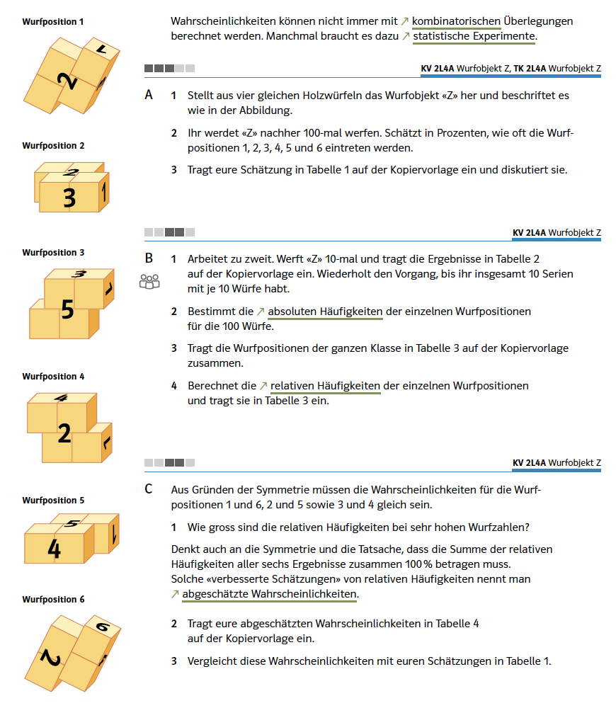
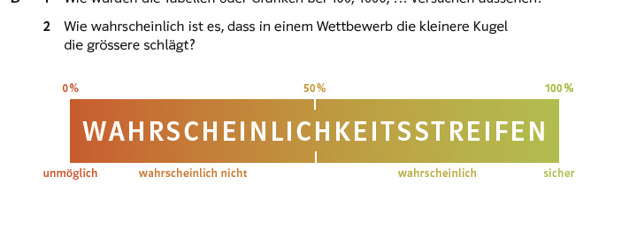
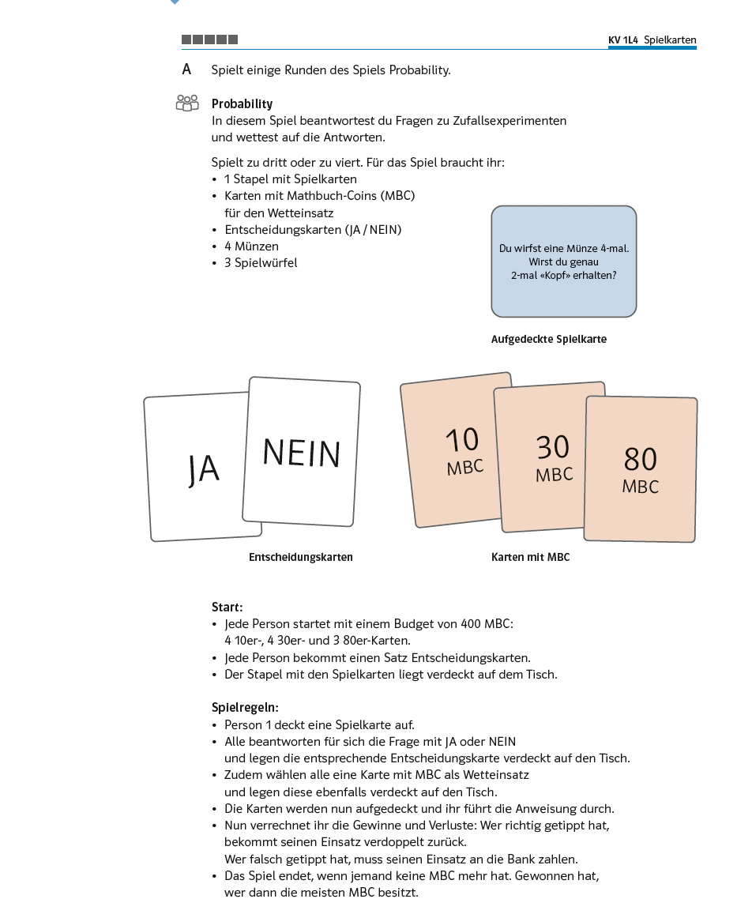
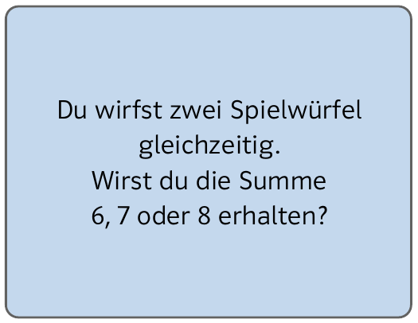

Bezug zur SchulpraxisWenn Abzählen nicht mehr geht
Dieses Kapitel beginnt mit einer Frage: Was heisst es eigentlich, ein Ereignis habe die Wahrscheinlichkeit $0{,}82$? Unsere Antwort war eine Häufigkeitsaussage – in $n$ Versuchen tritt es ungefähr $n\cdot p$-mal auf.
Genau diese Aussage verlangt eine Aufgabe, die uns schon begegnet ist. Nachdem beim zweifachen Würfelwurf begründet werden soll, weshalb Doppelsechs, genau eine 6 und keine 6 verschiedene Wahrscheinlichkeiten haben, heisst es dort: Wie oft würdet ihr die drei bei tausend Doppelwürfen jeweils erwarten? Das ist $n\cdot p$, gefragt in der achten Klasse.
Sobald sich eine Wahrscheinlichkeit aber nicht mehr abzählen lässt, stellen sich drei Fragen nacheinander: Woher kommt die Zahl? Was macht sie zu einer Wahrscheinlichkeit? Und was bedeutet sie dann? Alle drei werden im Unterricht berührt.

Quelle: Mathbuch 2 (überarbeitete Ausgabe), Aufgabe 2L4 A bis C, S. 69
Woher die Zahl kommt
Der zweite Begriff des Kapitels ist im Lehrmittel sogar ein Fachbegriff: absolute und relative Häufigkeit werden beide eingeführt und im Register geführt, die Randspalte erläutert sie am Beispiel – acht orange Linsen von vierzig ergeben $\tfrac{8}{40} = 0{,}2 = 20\,\%$. An dieser Stelle stimmt also nicht nur die Sache, sondern auch das Wort.
Was fehlt, ist der nächste Schritt: die Frage, was mit diesen Anteilen geschieht, wenn man immer weiter misst. Ihn macht eine einzige Aufgabe, und sie macht ihn sorgfältig:
Halten Sie hier kurz inne. Die Aufgabe besteht aus vier Schritten. Welche Funktion hat jeder einzelne – und was ginge verloren, wenn man einen wegliesse?
Antwort anzeigen
Der erste Schritt ist eine Schätzung in Prozenten, abgegeben bevor ein einziges Mal geworfen wurde. Sie erzeugt eine Erwartung, an der sich die späteren Daten reiben können.
Der zweite Schritt sind Zehnerserien, die erst danach zu hundert Würfen zusammengelegt werden. Wer zehn Würfe notiert, sieht ein fast beliebiges Bild wer zehn solche Serien nebeneinanderlegt, sieht die Streuung zwischen ihnen. Die Instabilität kleiner Stichproben wird so zur eigenen Erfahrung, bevor über Stabilität gesprochen wird – das ist das empirische Gesetz der grossen Zahlen, erlebt statt behauptet.
Der dritte Schritt trägt die Klassendaten zusammen, der vierte deutet sie. Und erst dort kommen die beiden Überlegungen, die aus Häufigkeiten Wahrscheinlichkeiten machen: die Symmetrie des Körpers und die Bedingung, dass sich alle sechs Werte zu $100\,\%$ ergänzen müssen.
Was sie zu einer Wahrscheinlichkeit macht
Die drei Kolmogorow-Axiome sind im Unterricht keine Definition, aber sie sind da. Dass Wahrscheinlichkeiten nicht negativ sind, ergibt sich von selbst, wenn man Anteile zählt. Und die Normierung steht ausdrücklich im Aufgabentext – als Bedingung, mit der die Klasse ihre Schätzwerte verbessert. Sie erscheint dort nicht als Eigenschaft, die eine Wahrscheinlichkeit hat, sondern als Werkzeug, mit dem man rechnet.
Auch die Additionsregel wird gebraucht, wenn auch nicht so genannt: Sobald Anteile mehrerer Fälle zusammengezählt werden, steckt sie dahinter. Wir kommen im nächsten Kapitel darauf zurück, wo sie neben den übrigen Rechenregeln steht.
Was das Lehrmittel dagegen nicht beantworten kann, ist die Frage, weshalb sich die beobachteten Häufigkeiten überhaupt beruhigen. Dass sie es tun, erleben die Lernenden warum man sich darauf verlassen darf, ist der Inhalt des Bernoullischen Gesetzes der grossen Zahlen.

Quelle: Mathbuch 1 (überarbeitete Ausgabe), Aufgabe K2 B, S. 61

Quelle: Mathbuch 1 (überarbeitete Ausgabe), Aufgabe L4 A, S. 69

Quelle: Mathbuch 1 (überarbeitete Ausgabe), Kopiervorlage KV 1L4A zu Aufgabe L4
Was sie bedeutet
Damit stehen zwei Wege zu einer Zahl nebeneinander: das Abzählen des vorigen Kapitels – von dem wir gezeigt haben, dass es die Axiome erfüllt – und das Erheben dieses Kapitels. Was die Zahl ist, beantwortet keiner der beiden.
Malle und Malle (2003) unterscheiden dazu vier Grundvorstellungen, und ihre Reihenfolge ist aufschlussreich. An erster Stelle steht die Wahrscheinlichkeit als Mass für eine Erwartung: Sie drückt aus, wie sicher man ist, dass ein Ereignis eintreten wird. Erst danach folgen die beiden Rechenwege, der relative Anteil und die relative Häufigkeit. Und schliesslich das subjektive Vertrauen: eine persönliche Einschätzung aus Erfahrung oder Intuition.
Die erste dieser Vorstellungen ist also keine Alternative zu den Rechenwegen, sondern das, wozu sie dienen. Und sie steht im Lehrmittel ganz am Anfang, lange bevor gerechnet wird:
Der Streifen reicht von «unmöglich»\ bis «sicher», und darauf ist eine Einschätzung zu markieren – ohne dass etwas gezählt oder erhoben worden wäre.
Solange eine Aufgabe mit einer Zahl endet, bleibt allerdings offen, ob diese Zahl für jemanden eine Erwartung ausdrückt. Man kann sie hinschreiben, ohne ihr etwas zuzutrauen. Genau das ändert sich, sobald etwas von ihr abhängt – und dafür gibt es im Lehrmittel ein eigenes Format, das Spiel «Probability»:
Zu jeder aufgedeckten Fragekarte legen alle verdeckt eine Entscheidungskarte – Ja oder Nein – und dazu einen Einsatz von zehn, dreissig oder achtzig Münzen. Eine der Karten:
Halten Sie kurz inne und legen Sie sich fest: Ja oder Nein – und würden Sie viel darauf setzen oder wenig?
Antwort anzeigen
Die Wahrscheinlichkeit lässt sich bestimmen: Von den $36$ Paaren führen fünf auf die Summe $6$, sechs auf die Summe $7$ und wieder fünf auf die Summe $8$, macht $16$ von $36$ oder knapp $44\,\%$. Aber gewürfelt wird einmal, und die Zahl beantwortet die Frage nicht von selbst – man muss ihr zutrauen, dass sie etwas über diesen einen Wurf sagt.
Der Kartensatz umfasst achtzehn Fragen zu Münzen und Würfeln, alle mit dem Abzählen des vorigen Kapitels lösbar. Bemerkenswert ist, dass keine einzige über einem Halb liegt: Auf jede lautet die begründete Antwort Nein oder «egal». Vier Karten liegen bei genau einem Halb, drei weitere bei $\tfrac{3}{8}$ – darunter die Frage, ob bei vier Münzwürfen genau zweimal Kopf fällt, bei der die Intuition meist Ja sagt.
Das Spielprinzip haben wir mit Kolleginnen und Kollegen in einem eigenen Projekt untersucht (Allmendinger et al., 2021). Dort zeigte sich, dass der Ertrag nicht im schnellen Rechnen liegt, sondern im Aushandeln: Wir lassen deshalb in Gruppen spielen, die sich vor dem Aufdecken auf eine Antwort und einen Einsatz einigen müssen. Erst dann muss jemand sagen, warum er sich so sicher ist, wie er tut. Die Fassung im Lehrmittel sieht vor, dass jede Person für sich antwortet und verdeckt legt – damit bleibt die Begründung, auf die es ankäme, unausgesprochen.
Im zweiten Band wird das Spiel wieder aufgenommen, und im Material steht dann neben den Würfeln das Wurfobjekt «Z». Damit können auch die abgeschätzten Wahrscheinlichkeiten aus der eigenen Versuchsreihe zur Wettgrundlage werden.
Fazit
Von diesem Kapitel geht mehr in den Unterricht ein, als es zunächst scheint. Die relative Häufigkeit ist dort ein Fachbegriff, die Häufigkeitsinterpretation $n\cdot p$ wird verlangt, die statistische Wahrscheinlichkeit heisst «abgeschätzte Wahrscheinlichkeit», und die Normierung wird als Werkzeug gebraucht.
Was Sie darüber hinaus brauchen, ist zweierlei. Erstens die Begründung dafür, dass sich relative Häufigkeiten überhaupt stabilisieren – ohne sie ist die ganze Konstruktion ein Versprechen. Und zweitens das Wissen, dass «Wahrscheinlichkeit»\ je nach Aufgabe etwas anderes meint. Diese vier Vorstellungen sind nichts, was man in der Sekundarstufe I einführt. Man erkennt an ihnen, worüber gerade gesprochen wird – und warum eine Klasse, die richtig gerechnet hat, trotzdem ratlos sein kann, wenn sie sich festlegen soll.